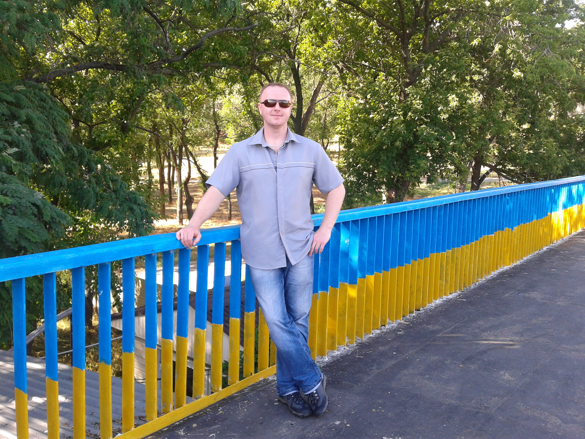

Кузьмин Юрий Викторович 
tel: 050-760-76-77
mail: midas2012.mm@gmail.com
Junior верстальщик
Намерен координально сменить род деятельности. Освоить вёрстку сайтов и иметь возможность зарабатывать на этом поприще.
На данном этапе пользы от меня как "с козла молока". Только начал обучение вёрстке сайтов. Никаких навыков и опыта работы пока, к сожалению, не имею.
Мой первый сайт - это одностроничный сайт-портфолио, который я создам, проходя бесплатную часть обучения в HTML-академии.
Сайт будет посвещён будущему малому бизнесу Супруги. А именно дизайну ногтей и методам его воплощения.